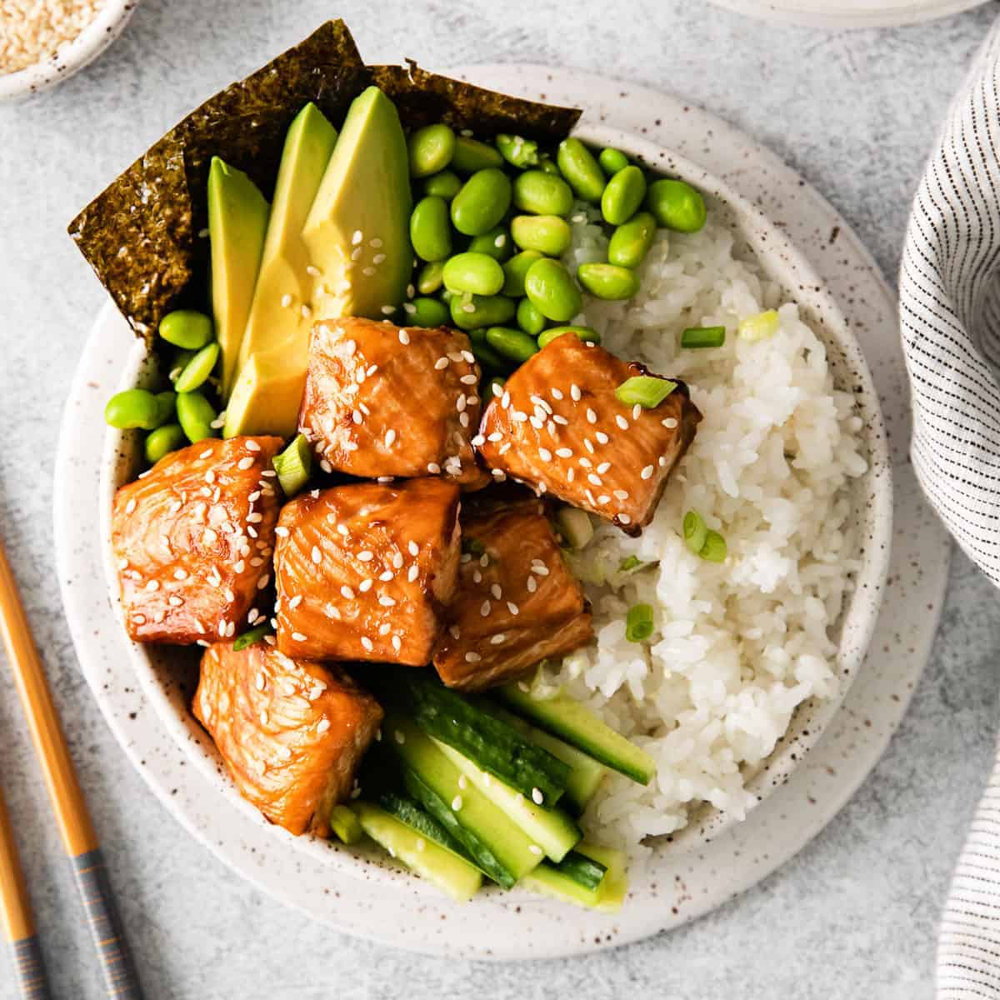

How to Make Salmon Teriyaki Bowls

Description:
Ingredietns
- Salmon Fillets
- Kosher Salt
- Ground Black Pepper
- Teriyaki Sauce
- Jasmine Rice
- Sriracha
- Edamame
- Avocado
Steps
- Preheat the oven to 450 degrees F (235 degrees C). Line a rimmed baking sheet with foil and lightly grease the pan.
- Season salmon with salt and pepper and spread 1 tablespoon teriyaki sauce over each fillet. Set salmon on the prepared baking sheet.
- Bake in the preheated oven until salmon flakes easily with a fork, 10 to 12 minutes, or to your preferred doneness.
- Meanwhile prepare rice and edamame according to package directions; keep warm.
- Divide rice among bowls and top with edamame. Flake 1 piece of salmon on top and add avocado.
- Drizzle 1 to 2 tablespoons of remaining teriyaki sauce over each bowl and drizzle with hot sauce.
Home